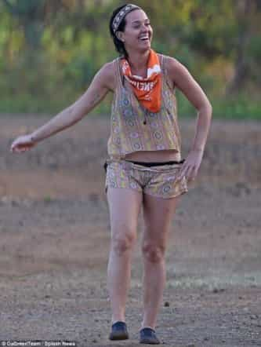

< < < Back
The 10 Most Overrated Female Celebrities – Return Of Kings
I’ve always said that the hottest girls in the world aren’t famous. Most men who have been around, I’d venture to guess, would agree. Yet, that doesn’t stop both men’s and women’s magazines and websites from coming out with annual lists of the “Hottest Women of the Year!” Invariably, these are little more than catalogs of the most hyped celebrities of the moment, and are compiled by people with no business assembling such lists: middle-aged women, gay men, and clueless chicks who think “empowered” you-go-girlism is somehow attractive to a heterosexual man.
Go to pretty much any major college campus in the US—especially those reputed to be party schools—and watch every single one of the girls on this list get blown out of the water repeatedly and unmercifully. And, that’s by girls just leaving the gym, in their Lululemon pants, their hair in a ponytail, and not a single drop of deceptive makeup.
And, before you say it: of course I would bang. But, given the choice, I’m going with the no-name college hottie over the aging celeb under an inch of makeup, or behind five Photoshop filters, any day of the week.
10. Jennifer Lopez
Despite the fact that her undeserved hype train is finally slowing down, this doesn’t preclude people from still including her on these “hottest” lists. She especially deserves mention because her famous “ass” remains one of the biggest fictions in all of ass history.
9. Jennifer Aniston
An aging divorcee who was somehow named Hottest Woman of All-Time by Men’s Health last year. She’s the supreme example of the media’s tendency to shove aging women—long after their prime—into men’s faces, thinking that this will somehow convince our boners that these women are more desirable than just about any non-fat girl 10 or 15 years her junior. Aniston, simply told, is middle-aged women’s wishful projection that female beauty lasts as long as male attractiveness. Jennifer Aniston is not unlike Cameron Diaz or Demi Moore—formerly attractive women being passed around between male celebrities looking to improve their image.
8. Kim Kardashian
The darling of American black guys, a chick who looked merely okay a few years ago and, even then, only with the massive layers of Hollywood magic. She’s lingered long after her somewhat attractive phase.
7. Emma Stone
A merely bangable girl who somehow gets massive points for her pre-scripted, and over-written, snark in movies. Most men, in real life, would classify both that and her deep, raspy voice as negatives.
6. Rihanna
Her ugly haircuts and pursed face have—appropriately—invited comparisons to a llama.
5. Beyonce
The supreme example of how hyped-up you-go-girlism can artificially boost a girl’s rating despite her merely okay looks. No one doubts that she can sing and dance, but her frequent inclusion—often near the top—in lists of the hottest girls around is obscene.
4. Mila Kunis
The new generation—along with Natalie Portman and Katie Holmes—of cute girls who have actually passed their prime but only now are suddenly being listed as hot. As uncomfortable a truth as it may be for the editors of media magazines, Mila looked 10 times better when she was on That ‘70s Show. The factor that puts her on this list, but spares her aging colleagues, is her tragically non-existent ass.

3. Taylor Swift
One of the rare cases where habitual carousel-riding (sluttiness) has been called out by the media (thanks, in no small part, to an intrepid Ellen DeGeneres). This is a girl with a stunning face—though only at select angles—but whose beauty breaks down when you start looking around even a little bit.
2. Katy Perry
A chick who offers little more than a large set of cans—that undoubtedly have a deep sag outside of their harness—and a face that declines massively when you remove the pounds of make-up she piles onto her face. Her body is shockingly unremarkable apart from her famed tits.

1. Kate Upton
America’s current blonde sweetheart who, despite her being trumpeted as the hottest thing out there, is little more than a pair of tits on a milk-carton body. Upton boasts zero thighs, no hips, no ass, all on her massive 5’10” frame.
Read More: Super Bowl Commercials Aren’t Sexist


{kind=link}
{kind=link}
{kind=link}
{kind=link}
{kind=link}
{kind=link}
{kind=link}
{kind=link}
{kind=link}